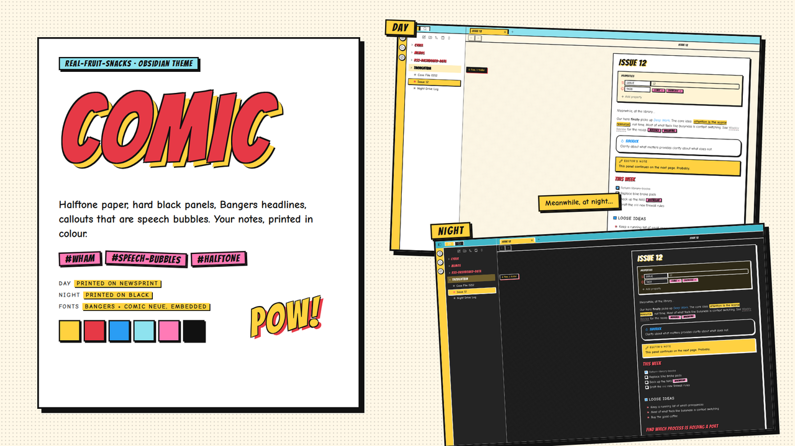
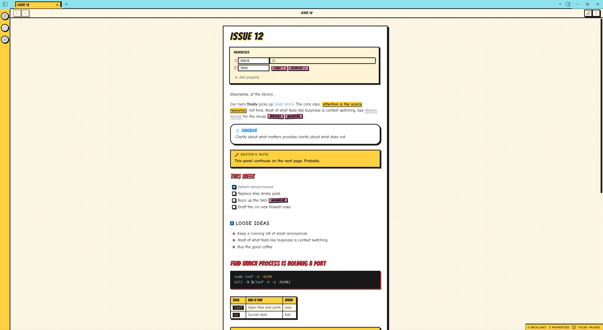
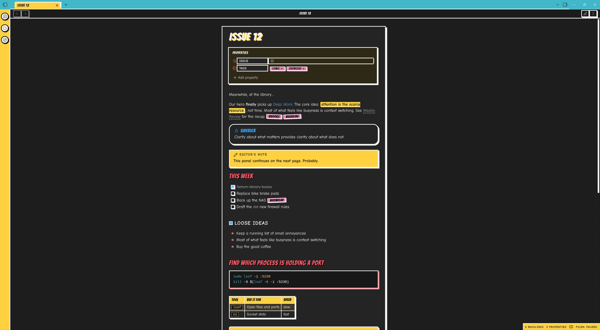

Halftone paper, a hard black panel around every note, Bangers headlines with a yellow drop — and one trick: callouts are speech bubbles.

Obsidian's own components, inked and lettered.
Tips are rounded bubbles with a coloured Bangers title. Notes are square yellow caption boxes. Warnings are burst boxes with a WHAM! in the corner. Quotes go rounder and italic; questions collapse.
Bangers headlines — yellow drop on H1, red H2 with a black drop — and Comic Neue body. Both embedded, nothing to install.
Halftone-dot paper and a 3px black frame with a hard offset shadow around every note. The file explorer has red Bangers folders, starred files and a POW! at the bottom.
Tags are pink stickers, tilted in Reading view. Highlights are yellow with a shadow. Tables get Bangers headers; checkboxes are boxed and fill blue.
Code blocks are black boxes with yellow text, a red offset shadow and a pink language flair — in Reading view and in the editor.
Day is printed on newsprint. Night is the same page printed on black, with white ink lines.
Readable line length on — the panel and its shadow sit in the halftone around a centred page.


From the community list, or two files by hand.
theme.css and manifest.json from the latest release into .obsidian/themes/Comic/, then pick it under Appearance.> [!warning] Villain alert and look for the WHAM!..obsidian/
themes/
Comic/
theme.css
manifest.jsonPaper, ink, and four printing colours.
| Role | Day | Night |
|---|---|---|
| Paper | #FFF8E7 | #141414 |
| Panel | #FFFFFF | #1F1F1F |
| Ink | #111111 | #F5F5F5 |
| Yellow | #FFD23F | #FFD23F |
| Red | #E63946 | #FF5A66 |
| Blue | #2A9DF4 | #4FB0FF |
| Cyan | #8EE3EF | #3FB8C9 |
| Pink | #FF7AB6 | #FF7AB6 |
Same site, a different glow per project.